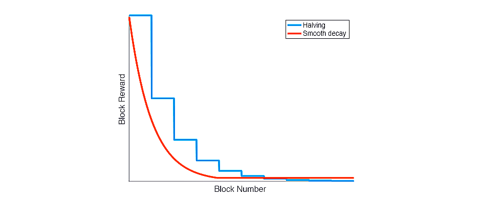
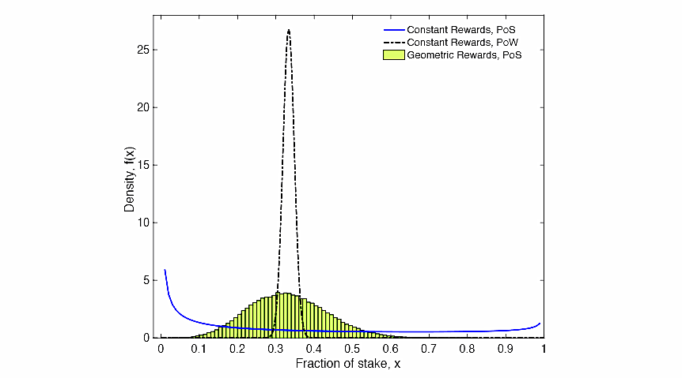

7.2 Block Rewards(区块奖励)
Choosing a block reward schedule is an important question that is often addressed heuristically. For instance, in (7.5), we considered a stationary setting where the rate of growth of the token pool \(r(t)\) was constant. In general, we do not expect the system to be stationary; in fact, choosing a block reward function \(r(t)\) is of central interest. In this section, we discuss some of the key economic implications of block rewards for incentives of network participants, as well as distributional implications of alternative reward schedules.
选择一个区块奖励计划是一件很重要是事，这通常是摸着石头过河。例如，在公式（7.5）中，我们做了一个恒定设置，认为代币池的增长率 \(r(t)\) 是常数。通常，我们不期望系统是静止不变的；事实上，选择一个区块奖励函数 \(r(t)\) 是核心利益所在。在本节中，我们讨论了一些用来激励网络参与者的区块奖励的关键经济意义，以及替代奖励计划的分配影响。
A key property of block rewards is that they add to the total token supply. Some cryptocurrencies (e.g., Bitcoin [61] and derivatives) offer a block reward that decreases over time according to a fixed schedule, with a pre-determined end date. The total supply of Bitcoin tokens is thus limited. Others (e.g., Monero) maintain the block reward rate in excess of a positive lower bound at all time [177]; hence the token supply is unbounded. A natural question is how to evaluate these two operating points. In this section, we discuss some of the design tradeoffs.
区块奖励的一个关键属性就是它对代币总供应量的增加。一些加密货币（如，比特币[61]及其衍生品）会根据固定的时间表减少区块奖励，并有预先确定的日期。比特币的总供应量因此受到限制。其他的（如，门罗币）始终保持一个超过正下限的区块奖励率[177]；因此代币供应是无限的。那么，如何评估这两种操作方法就成了一个很自然的问题。在本节，我们将讨论一些设计上的权衡取舍。
7.2.1 The economic implications of block rewards（区块奖励的经济意义）
-
Who pays for running the network? （谁为网络的运行买单？）
Growth in total token supply imposes a cost on all token balances, since purchasing power of tokens is eroded over time. This effect is analogous to the well-known concept of “inflation tax” in conventional economic systems. Validators (recall that we group validators together with block proposers) are the beneficiaries of this “tax,” since they collect the newly minted tokens in the form of block rewards. As far as valuation goes, block rewards effectively raise the fees collected by the validators. This can be seen from the steady-state valuation equation (7.5): holding all else equal, raising \(kr\), where \(r\) is the rate of flow of block rewards, is equivalent to raising the transaction fee parameter \(c\). The precise breakdown between transaction fees and token-based rewards matters, however, because it determines who exactly pays for network operations.
由于代币的购买力随着时间的推移受到侵蚀，代币供应总量的增长会迫使所有代币余额产生成本。这种影响类似于传统经济体系中众所周知的“通货膨胀税”概念。验证者们（注意，我们把验证者和出块者组合在了一起）是这些“税”的受益人，因为他们以区块奖励的形式收到了新铸造的代币。就估值而言，区块奖励有效地提高了验证者收取的费用。这可以从稳态估值方程（7.5）中看出：保持所有其他值平稳，提高 \(kr\)，其中 \(r\) 是区块奖励的速率，相当于提高交易费用参数 \(c\)。交易费用和基于代币的奖励的精确分解是有重要影响的，因为它确切地决定了是谁在为网络运营买单。
Both types of rewards, transaction fees and block rewards, ensure that all those enjoying the benefits of the network contribute resources to running it. This arrangement closely resembles the funding of commonly used infrastructure in conventional economic systems: for instance, a highway network may be supported through toll fees, paid directly by the drivers, and through public funds, contributed by the broad base of tax payers enjoying the indirect benefits of the highway system. In the context of the electronic payment system, transaction fees are paid by the consumers whenever they use tokens for retail transactions, and accrue to the validators who support operations of the payment network that enables such transactions. In turn, block rewards expressed in newly minted tokens are effectively paid for by all network participants who hold token balances, whether or not they use their tokens for transactions. Importantly, all those who hold tokens as a store of value or for speculative purposes end up bearing some of the cost of such block rewards.
交易费用和区块奖励这二者都确保了所有享受网络红利的人都能为网络的运转贡献资源。这种设置和传统金融系统中常用的基础设施资金很相似：例如，一条高速公路网络将从通行费和公共资金中得到支持，其中通行费由司机直接支付，而公共资金是由更广泛的享受着高速公路系统间接利益的纳税人所贡献。在电子支付系统背景下，交易费用是由消费者在使用电子代币进行零售交易时所支付的，并累积给支持此类交易操作的支付网络的验证者。相应地，所有持有代币余额的网络参与者，无论他们是否将其代币用于交易，新铸造地代币都会通过他们被有效地支付作为区块奖励。重要的是，所有持有代币作为价值储藏或投机目的的人最终都要承受这种区块奖励的部分成本。
Spreading the burden of funding network operations across a broad range of users, from frequent transactors to long-term holders of tokens, is more than an issue of fairness. All else equal, making speculators pay for some of the block rewards reduces the required level of transaction fees, which generally enhances token adoption and growth of the network. It is reasonable to expect that, in a new system, the volume of retail transactions starts at a relatively low level, grows over time. In contrast, speculative trading may be very active from the start, when future prospects of the network are highly uncertain, declining eventually as the network settles into its steady-state dynamics. Under such expectations of the network’s growth, distributional considerations dictate that one should initiate the network with a relatively high initial block reward rate, so resources needed to support network function at this early stage are contributed primarily by speculators, and gradually reduce block rewards as the volume of retail transactions rises. In the long run, funding of network functions would then increasingly rely on the transaction fees, rather than block rewards.
在广泛的用户范围内，将网络的运营资金负担分散到频繁交易者乃至代币的长期持有者身上，这不仅仅是一个公平性的问题。所有人都是平等的，让投机者为区块奖励做出一些付出会减少交易费用水平的需求，这通常也会提高代币的采用以及网络的发展。在一个新的系统中，期望零售交易量以一个较低的水平开始，然后随着时间增长，这是合理的。相反，投机交易在刚开始可能会很活跃，当网络的未来前景高度不确定时，随着网络逐渐进入稳定状态，投机交易最终会降低。在对网络发展的这种期望下，处于对分配的考虑，决定了人们应该以相对较高的初始区块奖励率来启动网络，因此，早期支持网络功能所需的资源主要由投机者贡献，并且随着零售交易量的增加要逐步减少区块奖励。从此长远来看，网络功能所需的运转资金会越来越多的依赖于交易费用，而不是区块奖励。
-
Incentives for Validators（验证激励）
Consider the steady-state solution for token valuation, (7.4, 7.5). Validators earn an expected rate of return equal to \(λ_f + ησ\), which is their opportunity cost of taking on the risk of the flow of transaction fees and block rewards. Note that the equilibrium expected return of the validators is neither affected by the level of transaction fees nor the block reward rate. Rather, validators’ expected rate of return is determined by the opportunity cost of holding tokens. In equilibrium, each validator decides how many tokens to stake. As validators stake more tokens, they collectively drive down the equilibrium rate of return each of them earns; conversely, their rate of return rises as validators stake fewer tokens. As a result, the level of transaction fees \(c\) and block reward rate \(r\) affect the combined value of the validators’ stakes, but not the equilibrium expected rate of return they earn. Specifically, the combined value of the validators’ stakes is
我们来思考代币估值的稳态解，（即7.4、7.5所示）。验证者获得的预期回报率等于 \(λ_f + ησ\)，这是他们承担交易费用和区块奖励资金流风险的机会成本。要注意的是，验证者的均衡预期回报，既不受交易费用水平的影响，也不受区块奖励率的影响。相反，验证者的预期回报率是由持有代币的机会成本决定的。在平衡状态下，每个验证者自我决定要质押多少代币。当验证者质押更多的代币时，他们共同压低了他们每个人获得的均衡回报率；相反，当验证者质押较少的代币时，他们的回报率会上升。因此，交易费用水平 \(c\) 和区块奖励率 \(r\) 影响的是验证者权益代币的综合价值，而不是他们赚取的预期回报率。具体来说，验证者权益代币的综合价值是：
\[ \ \phi_t p_t = (A - k) Y_t = \ \frac {c+kr} {λ_f + ησ - g_Y} Y_t \]
All else equal, the value of validators’ token holdings increases in the level of transaction fees \(c\) and the block reward rate \(r\). The fraction of the overall token pool held by the validators is also increasing in these two parameters.
其他一切平稳的情况下，验证者持有的代币价值增加于交易费用水平 \(c\) 和区块奖励率 \(r\)。验证者持有的代币在整体代币池中的占比也增加于这两个参数的影响。
Rewarding validators with new tokens thus offers them a claim on the proceeds from seigniorage in the PoS system. Those network participants who hold balances and do not act as validators have no such claim –– they maintain token balances because of their convenience value or for speculative reasons. This creates a wedge, \(λ_f + ησ - g_Y + r\), between expected returns earned by the validators and returns earned by other holders of tokens. Thus, while not affecting the equilibrium expected rate of return of validators, the rate of growth of token supply \(r\) lowers the expected return earned by other network participants. A higher rate of block rewards thus discourages network participants from passively holding tokens and not acting as validators. This mechanism becomes particularly meaningful when we account for various additional costs faced by validators, including physical costs of running validator nodes and losses due to stake slashing (triggered by accidental violations, e.g., validator nodes being off-line).
用新币奖励验证者，这样就给他们了一份在PoS系统中的铸币收益债权。那些持有余额但不充当验证者的网络参与者不拥有这样的债权——他们保持代币余额是因为它们的便利价值或者是出于投机的原因。这在验证者赚取的预期回报与其他的代币持有者赚取的回报之间创造了一个楔子，即 \(λ_f + ησ - g_Y + r\)。这样，虽然不影响验证者的均衡预期回报率，但代币的供应增长率 \(r\) 降低了其他的网络参与者赚取的预期回报。更高的区块奖励率因此也阻碍了网络参与者的被动持有代币，而不充当验证者。当我们对验证者所面临的各种额外成本做出解释时，这种机制就变的特别有意义了，这些成本包括了运行验证节点的物理成本，以及因削减权益代币造成从损失（这种削减由意外违规触发，例如，验证节点处于离线状态）。
-
User Adoption（用户的采用）
In the stylized model of this chapter, the volume of consumer-merchant transactions using tokens is exogenous, and consumer holdings of tokens are inelastically related to this transaction volume. In a more realistic description of network dynamics, consumer demand for token balances should be elastic with respect to the expected rate of return earned on such balances, in addition to the liquidity benefits of holding tokens. By penalizing token balances, higher block reward rates reduce consumer demand for token balances, ultimately translating into lower adoption of tokens by consumers and merchants. In other words, by reducing expected returns on passive holdings of tokens, higher block reward rates may eventually hurt user adoption of the cryptocurrency. Such considerations inform our thinking about the qualitative aspects of the desirable block reward schedule. More formal analysis of user adoption requires further research, and is beyond the scope of this chapter.
在本章程式化的模型中，使用代币进行商业消费的交易量是外生的，而消费者的持币与这种交易量是非弹性相关的。我们对网络动态做一个更现实的描述，除了持有代币的流动性收益外，消费者持有代币余额的需求与他们在这些代币余额上赚取的预期回报率应该是弹性相关的。通过使代币余额处于不利地位，较高的区块奖励率削弱了消费者对代币余额的需求，最终转化为消费者和商人对代币更低的采用水平。换句话说，通过减少被动持有代币的预期回报，更高的区块奖励率最终可能会损害用户对加密货币的采用。这些考虑反映了我们对理想的区块奖励计划在定性方面的思考。关于用户采用的更正式的分析需要进一步的研究，也超出了本章节的范围。
7.2.2 Block Reward Schedule: Design Considerations（区块奖励计划：设计考虑）
Our analysis of economic implications of block rewards provides some guidance for how to design block reward schedules with desirable properties. A well-chosen block reward schedule should ensure long-term economic viability of the payment network, including sufficient incentives for user adoption and for participation in performing network functions (block proposals and validation), while also enforcing fairness among validators and proposers. We currently envision a design with a reward rate that starts at a relatively high level at the launch of the network, and decays over time as the network matures.
我们对区块奖励的经济意义所做的分析，对于如何设计一个具有理想属性的区块奖励计划提供了一些指导。一个精心选择的区块奖励计划应确保支付网络的长期经济可行性，包括了对用户采用和参与执行网络功能（出块和验证）的充分激励，同时也在验证者和出块者之间强加了公平性。我们目前设想的一种奖励率的设计，其奖励率在网络启动之初以一个相对较高的水平开始，随着网络的成熟而逐渐衰减。
A high initial rate of block rewards is in line with the design of many existing cryptocurrencies. This encourages participation of token holders in the validation pool during the early period of network development, when the volume of consumer transactions, and thus the volume of transaction fees is low. During this early period, it is imperative to reward proposer and validator nodes for their efforts; without such nodes, the system cannot operate.
高初始块奖励率符合许多现有加密货币的设计。这会鼓励代币持有者在网络开发初期参与到验证池中，那时候消费者交易量较低，因此交易费用的量也很低。在这一早期阶段，对出块节点和验证节点所做的努力给予奖励是必要的；没有这些节点，系统将无法运行。
As adoption increases, initial growth in token supply will gradually decline. In the long run, the desirable rate of block rewards is subject to the tradeoffs discussed in Section 7.2.1 above. Higher reward rate distributes the financial burden of running the network over a broader base of token holders. At the same time, higher reward rate effectively taxes passive token balances, hurting user adoption. Depending on which of these forces dominates, the long-run block reward rate may remain positive or possibly converge to zero. We are still in the process of selecting a block reward schedule.
随着采用率的增加，代币供应的初始增长率将逐渐下降。从长远来看，理想的区块奖励率符合在上文第\(7.2.1\)小节中讨论到的权衡。较高的回报率在更广泛的代币持有人基础上分散了运行网络的财务负担。同时，更高的回报率有效地对被动代币余额征了税，也损害了用户的采用。依据这些力量中谁占主导地位，长期的区块奖励率可能保持为正又或者可能收敛到零。我们仍然是处于一个区块奖励计划的选择过程中。

Figure 7.1: Comparison between common block reward functions. Halving is used in Bitcoin and many of its derivatives, whereas smooth decay is used in Monero. （图7.1：常见区块奖励函数之间的比较。比特币及其许多衍生品使用减半法，而门罗币则使用平滑衰减法。）
For reference, Figure 7.1 shows caricatures of reward rate schedules that have been adopted in existing cryptocurrencies. ‘Halving’ refers to reward schedules that maintain a constant reward over a long period (e.g. years), and periodically reduce the block reward by half. This approach is used in Bitcoin and several cryptocurrencies derived from it. ‘Smooth decay’ is used in Monero, and gives a smooth approximation of the reward function in Bitcoin. Notice that the smooth decay curve is lower bounded by a fixed minimum block reward; this is a detail specified by Monero’s monetary policy. In our case, that minimum rate of growth in token supply need not exist.
作为参考，图7.1模拟了采用在现有加密货币上的块奖励率方案。“减半法”是指在较长时间内（如几年）保持不变的奖励计划，并定期将区块奖励减少一半。这种方法被用于比特币及其衍生的几种加密货币。“平滑衰减法”用于门罗币，对比特币中的奖励函数的做了一个平滑近似。请注意，平滑衰减曲线的下限是一个固定的最小区块奖励；这是由门罗币的货币政策指定的细节。在我们的例子中，代币供应的最低增长率不需要存在。
We show in the next section (7.2.3) that choosing large initial block rewards (compared to the initial stake pool) can lead to substantial and irreversible wealth imbalance in PoS systems. For example, Bitcoin started with a stake pool of 50 BTC and initial block rewards of 50 BTC per block; in a PoS system, such parameter choices could very easily lead to substantial wealth concentration. Starting with a large initial stake pool compared to the block reward size is an easy way to counter these effects. At first glance, this directive seems to counter the earlier conclusion that we need high initial inflation to encourage adoption. Indeed, there is a tradeoff between choosing inflation high enough to encourage adoption and keeping it low enough to prevent severe wealth imbalance. To this point, notice that to prevent stake imbalance, the inflation rate does not need to be excessively small. In practice, our simulations suggest that if the block reward is less than, say, a thousandth of the initial stake pool, then stake imbalance remains mild [68]. For example, if Unit-e begins with an initial stake pool of 1.5 billion tokens, then this rule of thumb suggests a block reward of at most 1.5 million tokens per block. Aggregated over all the blocks in a year at a (conservative) block rate of 30 seconds per block, this imposes an upper bound on annual inflation of around 100,000%. Such an inflation rate is orders of magnitude higher than any we would set in practice, even in the early days of Unit-e. Hence, the apparent tension between encouraging equitability and adoption is weak; for a large enough stake pool, we can choose inflation to be very high without affecting equitability.
我们在下一节（7.2.3）中会指出，选择大额初始区块奖励（与初始代币权益池相比）可能导致PoS系统中的具有实质性的且不可逆转的财富失衡。例如，比特币从 50 个比特币的权益池和每个区块 50 个比特币的初始奖励开始；在一个 POS 系统中，这样的参数选择很容易导致大量财富集中。与区块奖励规模相比，从一个大的初始权益池开始，是一个很容易应对这些影响的方法。乍一看，这一指令似乎与早先的结论相反，即我们需要高初始通胀率来鼓励采用。实际上，在选择足够高的通胀率来鼓励采用和保持足够低的通胀率以防止严重的财富失衡之间存在着一种权衡。到目前为止，请注意，为了防止股权失衡，通胀率不需要太过于小。在实践中，我们的模拟表明，如果区块回报低于，比如说，初始权益池的千分之一，那么权益失衡仍然很温和 [68]。例如，如果 Unit-e 从 15 亿代币的初始权益池开始，那么这个经验法则建议每个区块最多可获得 150 万代币的区块奖励。在一年内以 30 秒/区块的（保守的）块速度对所有块进行合计，这迫使年通胀率上限大约为 100,000%。这样的通胀率比我们在实践中设定的任何通胀率都要高出几个数量级，即使是在 Unit-e 的早期。因此，在鼓励均衡性和采用之间明显的紧张关系是微弱的；对于足够大的代币权益池，我们可以选择非常高的通胀率而不影响均衡性。
7.2.3 Equitability in PoS block reward schemes（PoS系统区块奖励方案的均衡性）
In this section, we study one of the tradeoffs involved in choosing a block reward function: equitability. At a high level, equitability means that a party that begins with a certain fraction of stake cannot unduly amplify its fraction of stake simply by participating in block proposal or validation. Perhaps surprisingly, standard PoS implementations can exhibit extreme inequitability if system parameters are chosen naively. For example, consider a PoS blockchain that awards the full block reward to the user that proposes each block. This is a standard assumption that is used in almost every PoS cryptocurrency today. Suppose further that block rewards are immediately incorporated into each party’s portion of the proposal stake pool. Now let us initialize such a system with parameters comparable to Bitcoin’s initial state: 50 initial tokens and a block reward of 50 tokens. If party A owns \(\frac 1 3\) of the initial stake, a simple Polya’s urn argument shows that as the block length tends to infinity, the limiting stake of party A converges almost surely to a random variable with distribution Beta\((\frac 1 3, \frac 2 3)\), visualized in Figure 7.2 by the blue solid curve labelled ‘Constant Rewards, PoS’.
在这一部分中，我们研究了在选择一个块奖励函数时涉及到的权衡之一：均衡性。在高层次上，公平性意味着以某一权益比例开始的一方不能仅仅通过参与出块或验证而过度扩大其权益比例。也许令人惊讶的是，如果系统参数的选择太幼稚，标准的 PoS 实现方案可以表现出极端的不均衡性。例如，我们来思考这样一个 PoS 区块链，它将全部的区块奖励奖励给了每个块的出块者。这是一个标准的假设，几乎被用于目前的每一个 PoS 加密货币中。再进一步假设，区块奖励被立即并入到各方的出块权益池份额中。现在，让我们将这个系统初始化到与比特币初始状态相当的参数：50 个初始代币和 50 个代币的区块奖励。如果甲方拥有初始权益的\(\frac 1 3\)，一个简单的波利亚坛子模型论据表明，当区块长度趋于无穷大时，甲方的极限权益几乎肯定会收敛于一个遵循 \(β(\frac 1 3,\frac 2 3)\) 分布的随机变量，直观显示在图7.2中，用‘Constant Rewards, PoS’标记的蓝色实曲线。

Figure 7.2: Limiting stake distribution of a party with 1/3 stake, under a PoS and PoW system initialized with Bitcoin’s block reward parameters.（图7.2：在用比特币的区块奖励参数初始化的POS和POW系统下，持有1/3股权方的极限权益分布。）
An important and troublesome property of this Beta distribution is the high probability mass near 0 and 1. Effectively, this means that party A can end up with extremely high or low stake percentages, simply through the natural randomness of the PoS leader election protocol. Moreover, this convergence occurs quickly in practice. In contrast, the black dashed curve illustrates the stake distribution for PoW after T = 1,000 blocks, using the same constant block reward function as Bitcoin. Notice that the PoW curve is substantially more concentrated around party A’s initial stake deposit. A natural question is whether any block reward function can produce a limiting stake distribution comparable to the black curve in a PoS setting. Our objective in this section is to explore this phenomenon more formally; we theoretically demonstrate how compounding affects fairness in PoS systems, both as an effect of the block reward function and the initial conditions of the system. To this end, we introduce a new metric called equitability, which intuitively measures how much a party can augment or decrease their fractional stake over time. We show that no block reward function can achieve the same degree of equitability as PoW, while also introducing a new geometric reward function that is maximally equitable over all reward functions. Figure 7.2 illustrates the empirical stake distribution of geometric rewards over T = 1,000 slots as a green histogram; notice that it is closer, but not the same, as the PoW baseline. This is a fundamental price we pay for the efficiency of PoS. Despite the fact that PoS cannot achieve the same equitability as PoW, we find that through proper system initialization, these effects can be dramatically mitigated. In particular, our findings give concrete guidelines for choosing the size of the initial stake pool, and the amount of rewards that should be disseminated over time, in order to ensure an acceptable level of equitability.
贝塔分布的一个重要且麻烦的特性就是会大概率地集中在0到1附近。实际上，这意味着，只要通过PoS领袖选举协议的自然随机性，甲方就可以获得极高或极低的权益比例。此外，这种收敛在实践中也很快发生。相比之下，黑色虚线说明了 T=1000 个区块后的 POW 的权益分布，使用地是与比特币相同的常量区块奖励函数。注意，PoW 曲线基本上是更多的集中在甲方的初始权益存款上。那么问题来了，在 PoS 系统设置中，是不是任何的区块奖励函数都会产生和黑色曲线相当的极限权益分布呢？我们在本节中的目标就是更正式地研究这一现象；我们从理论上证明了不同配制组合在 PoS 系统中对公平性的影响，既是作为区块奖励函数的影响，也是系统初始条件的影响。为此，我们引进了一个新的度量标准，称作“均衡性”，它直观地度量了某一方随着时间的推移能够增加或减少其权益比例到什么程度。我们表明了没有区块奖励函数能够达到和 PoW 同样水平的均衡性，同时也提出了一个新的几何奖励函数，遍及所有的奖励函数，该函数都是最大公平的函数。图7.2以绿色柱状图的形式说明了 T=1000 个槽的经验性的几何奖励权益分布情况；注意，它与 PoW 基线更接近，但不相同。这是我们为 PoS 的效率付出的一个基本代价。尽管 PoS 无法达到与 PoW 相同的均衡性，但我们发现，通过适当的系统初始化，这些影响可以显著减轻。尤其是，我们的研究结果对初始权益池规模的选择给出了具体的参考，而奖励的量也应该随着时间而散布，以确保一个可接受的均衡度水平。
Model We begin with some notation modeling a simple chain-based proof-of-stake system. We consider \(m\) parties: \(\mathcal{A}\)\(= {A_1,...,A_m }\). We assume that all parties keep all of their stake in the proposal stake pool, which is a pool of tokens that is used to choose the next proposer. As before, we consider a discrete-time system, \(n = 1,2,...,T\), where each time slot corresponds to the addition of one block to the blockchain. In reality, new blocks may not arrive at perfectly-synchronized time intervals, but we index the system by block arrivals. For any integer \(x\), we use the notation \([x]:= {1, 2, ..., x}\). We call the time interval \([T]\) an epoch: a period of time (blocks) during which a pre-specified number of inflation tokens should be dispensed. In Bitcoin, for example, an epoch lasts about four years, or 210,000 blocks; this is the time period over which the block reward function remains constant prior to the halving events.
建 模 我们用一些符号开始建模一个简单的基于链的PoS系统。我们考虑有 \(m\) 个相关方：\(\mathcal{A}\)\(= {A_1,...,A_m }\) 代表所有相关方的集合。我们假设各方都将其权益代币保留在出块权益池中，这是一个用于选择下一个出块人的代币池。和以前一样，我们按照一个离散时间系统来考虑，\(n = 1,2,...,T\)，其中每个时间间隙对应于向区块链上添加一个区块。实际上，新的区块可能不会以完全同步的时间间隔到达，但是我们通过区块的到达对系统进行索引。对于任何整数 \(x\)，我们定义 \([x]:= {1, 2, ..., x}\)。我们称时间间隔 \([T]\) 为一个纪元：这是一段时间（或者一定数量的区块），在此期间，应完成预先指定数量的流通代币的分配。例如，在比特币中，一个纪元持续四年，或者说210000个区块；在这个时间段，在减半事件发生之前，区块奖励函数保持不变。
For all \(i \in [m]\), let \(S_(A_i) (n)\) denote the total stake held by party \(A_i\) in the proposal stake pool at time \(n\). We let \(S(n) = \sum_{i=1}^m [S_(A_i) (n)]\) denote the total stake in the proposer stake pool at time n, and \(\upsilon_{A_i} (n)\) denotes the fractional stake of node \(A_i\) at time \(n\): \(\upsilon_{A_i} (n) = \frac {S_(A_i) (n)} {S(n)}\). For simplicity, we normalize the initial stake pool size to \(S(0)=1\); each party starts with \(S_{A_i} (0) = \upsilon_(A_i) (0)\) fraction of the original stake.
对于所有的 \(i \in [m]\)，用 \(S_(A_i) (n)\) 表示在时间 \(n\) 某一方 \(A_i\) 在出块权益池中所占的权益总额。用 \(S(n) = \sum_{i=1}^m [S_{A_i} (n)]\) 表示在时间 \(n\) 时出块权益池中的全部权益总额，而\(\upsilon_{A_i} (n)\) 表示节点 \(A_i\) 在时间 \(n\) 时的权益比例，即：\(\upsilon_{A_i} (n) = \frac {S_(A_i) (n)} {S(n)}\)。简单起见，我们将初始权益池大小标准化为 S(0)=1；则各方开始时的初始权益比例为：\(S_{A_i} (0) = \upsilon_(A_i) (0)\)。
At each time slot \(n \in [T]\) ，the system chooses a proposer node \(W(n) \in \mathcal{A}\) such that
在每一个时段n， \(n \in [T]\)，系统选出一个出块节点 \(W(n)\)， \(W(n) \in \mathcal{A}\)，即：
\[ \ W(n)=\left \{ \begin {array} {c} {A_{1}} & {w.p.} & {\upsilon_{A_{1}}(n)} \\ {\dots} \\ {A_{m}} & {w.p.} & {\upsilon_{A_{m}}(n)} \end {array} \right. \ \ \ \ \ \ \ \ \ \ \ \ \ \ \ \ \ \ \ (7.6) \]
Upon being selected as a proposer, \(W(n)\) appends a block to the blockchain. As compensation for this service, \(W(n)\) receives a block reward of \(r(n)\) stake, which is immediately added to its allocation in the proposer pool. That is,
当被选为出块人时，\(W(n)\) 就会添加一个区块到区块链上。为了补偿这个服务，\(W(n)\) 会获得一份计为 \(r(n)\) 权益值的区块奖励，这份奖励会立即在出块池中被分配。即：
\[ \ S_{W(n)}(n+1)=S_{W(n)}(n)+r(n) \]
The reward \(r(n)\) is freshly-minted at each time step, so it causes the total number of tokens to grow. We assume the total reward dispensed in time period \(T\) is fixed, so \(\sum_{n=1}^{T} r(n) = R\).
这份 \(r(n)\) 的奖励是在每个时间跨度新铸造出来的，因此它使得代币的总数量在增长。我们假设在时间周期T被分配的奖励总量是固定的，即 \(\sum_{n=1}^{T} r(n) = R\)。
Consider a closed PoS system where no stake is taken out of or put into the proposal stake pool over a fixed period of time T. The only changes to the stake of each party during this interval are due to the compounding effects of the rewards earned in proposing new blocks. At each (discrete) time step, a block reward is dispensed according to the randomized proposer election in Eq. (7.6). This is immediately added to the stake of the elected proposer. We focus on the scenario where every party follows protocol as a starting point.
考虑到一个封闭的PoS系统，在一个固定的时间周期T内，出块权益池中不会有权益代币被取出或者新增。在这个时间间隔内，每一方权益的唯一变化是由于新出块奖励混合进来造成的影响。在每一个（离散的）时间跨度，区块奖励将被分配给随机选择出来的出块人，正如方程（7.6）所示。这将立即被添加到所选的出块人的权益中去。我们致力于让每一方都以遵循协议为起点。
Common reward functions Between checkpoints, we can choose any block reward schedule \(r(n)\) that respects the total reward constraint of R. A natural choice, famously adopted in Bitcoin, is the constant block reward function, defined as:
常见的区块奖励函数 在允许范围内，我们可以选择任何受总奖励 \(R\) 约束的区块奖励计划 \(r(n)\)。在众所周知的比特币中，很自然地选择了一个常量块奖励函数，定义如下：
\[ \ r_{c}(n) : = \frac {R} {T} \ \ \ \ \ \ \ \ \ \ \ \ (7.7) \]
Perhaps surprisingly, we find that \(r_c\) introduce inequitability to the block reward scheme if initialized improperly. Critically, this can happen without any strategic behavior from any of the participants. Rather, it is the combined effect of compounding stake and randomized leader election that causes this effect. A main result of this work is that a geometric reward function, defined as
也许令人惊讶的是，我们发现如果初始化不当，\(r_c\) 会给块奖励方案引入不均衡性。更严重地，这可能发生在没有任何参与者做出过任何战略性行为的情况下。相反，这是复合权益和领导人的随机选择造成的综合影响。产生的主要的效果可以归结成一个几何奖励函数，定义如下：
\[ \ r_{g}(n) := (1+R)^{\frac {n} {T} } - (1+R)^{\frac{n-1}{T}} \ \ \ \ \ \ \ \ \ \ \ \ \ \ \ \ (7.8) \]
provably minimizes inequitability and exhibits a number of other desirable properties. Although geometric rewards may not be appropriate for deployment in a real cryptocurrency for various practical reasons, this work helps us to methodically choose system parameters, such as initial stake pool size.
可以证明，这会最大限度地减少不均衡性，并表现出许多其他理想的性能。尽管，因为各种原因，在真实的数字货币中部署几何奖励可能并不合适，但这项工作可以帮助我们有条理地选择系统参数，例如初始权益池规模。
7.2.3.1 Equitability（均衡性）
We study the stochastic dynamics of the fractional stake of one of the participating parties \(A\), who started with \(\upsilon_A(0)\) fraction of the initial total stake of \(S(0) = 1\). This is without loss of generality, as the random process is homogeneous in scaling both \(R\) and \(S(0)\) by a constant. We denote this fractional stake at time n by \(\upsilon_{A,r} (n)\), to make the dependency on the reward function explicit.
我们研究了其中某一个参与方 \(A\) 的权益份额的随机动态，该参与方 \(A\) 的初始权益比例是 \(\upsilon_A(0)\)，\(\upsilon_A(0)\)代表在初始总权益 (\(S(0) = 1\)) 中的占比。这并不失一般性，因为这个随机过程只是同质性地将 \(R\) 和 \(S(0)\) 缩放了常数倍。我们将其在时间 \(n\) 时地权益比例表示为 \(\upsilon_{A,r} (n)\)，以明确对块奖励函数的依赖性。
One desired property of a closed and fair PoS system is that the fractional stake should remain constant over time in expectation. If \(A\) contributes 10% of the proposal stake pool at the beginning of the time, then \(A\) should, on average, reap 10% of the total disseminated rewards. As randomness in the proposer election is essential to current PoS systems, this cannot be ensured deterministically. Instead, the popular choice of electing a proposer (in Eq (7.6)) with probability proportional to the fractional stake ensures that this holds in expectation. Formally, for all \(n \in [T]\),
一个封闭且公平的 PoS 系统的一个理想属性就是权益比例在期望值上一直保持不变。如果在最开始，\(A\) 就为出块权益池贡献了 10% 的权益代币，那么 \(A\) 也应该，平均下来，获得总分配奖励的 10%。由于出块人选择的随机性是当前 PoS 系统必不可少的，因此也就无法确切地保证这一点。相反，在公式 \((7.6)\)中的这种流行的出块人选择方法下，能够确保这一点符合期望，因为被选中的概率是同其权益份额成比例的。形式上，对于所有的 \(n \in [T]\)，有：
\[ \mathbb{E} \left[\upsilon_{A,r} (n)\right] = \upsilon_{A} (0) \ \ \ \ \ \ \ \ \ \ \ \ \ \ \ (7.9) \]
The expected fractional reward for any party stays constant in expectation, irrespective of which reward function is used. This follows from the law of total expectation and the fact that
无论使用哪种奖励函数，任何一方的期望奖励比例在期望值上都保持不变。这来源于总期望定律和以下事实：
\[ \begin{array} {l} {\mathbb{E} \left[ \upsilon_{A,r} (n) \mid \upsilon_{A, r}(n-1) = \upsilon \right]} \\ {=\upsilon \frac{\upsilon S(n-1)+r(n-1)} {S(n)} + (1 - \upsilon) \frac {\upsilon S(n-1)} {S(n)}} \\ {=v}\end{array} \]
where \(S(n)\) is the total stake at time \(n\).
其中，\(S(n)\) 是时间 \(n\) 时的总权益。
Even with the same expected fractional stake, the choice of the reward function can change the distribution of the final stake dramatically. We propose using the variance of the final fractional stake, Var\((\upsilon_{A,r} (T))\), to measure the level of uncertainty for different choices of the reward function.
即使在相同的预期权益比例下，奖励函数的选择也会显著改变最终权益的分配。我们建议使用最终权益比例的方差，Var\((\upsilon_{A,r} (T))\)，来衡量不同奖励函数选择的不确定性水平。
Definition 7.2.1. For two reward functions \(r_1\): \([T] \rightarrow \mathbb{R}^{+}\) and \(r_2\): \([T] \rightarrow \mathbb{R}^{+}\) with the same total reward, \(\sum_{n=1}^{T} r_{1}(n) = \sum_{n=1}^{T} r_{2}(n)\), we say \(r_1\) is more equitable than \(r_2\) if
定义7.2.1. 对于两个奖励函数 \(r_1\): \([T] \rightarrow \mathbb{R}^{+}\) 和 \(r_2\): \([T] \rightarrow \mathbb{R}^{+}\) 拥有相同的总奖励值，即，如果满足以下条件（即 \(r_1\) 对应的最终权益比例的方差小于 \(r_2\) 的），我们就说 \(r_1\) 比 \(r_2\) 更公平：
\begin{equation} \operatorname{Var}\left(\upsilon_{A,r_{1}} (T)\right) \leq \operatorname{Var}\left(\upsilon_{A, r_{2}}(T)\right) \ \ \ \ \ \ \ \ \ \ \ \ \ \ \ \ \ (7.10) \end{equation}
（映射 \(r: [T] \rightarrow \mathbb{R}^{+}\)即为从集合 \([T]\) 到实数集 \(\mathbb{R}^{+}\) 的函数 \(r(n)\)，定义域 \(n \in [T]\)，函数值在实数范围内。）
With this notion of equitability, there is a core optimization problem of interest to a PoS system designer: given a fixed total reward \(R\) to be dispensed, how do we distribute it over the time \(T\) to achieve the highest equitability? Perhaps surprisingly, we show that this optimization has a simple closed form solution.
有了这种均衡性的概念，PoS系统设计者就有了一个核心的利益优化问题：如果给定一个固定不变的待分配奖励总额 \(R\)，该如何在整个时间周期 \(T\) 内对其进行分配才能实现最高的均衡性呢？也许令人惊讶，我们证明了这种优化有一种简单的封闭式解决方案。
Theorem 2. The geometric reward \(r_g\) defined in (7.8) achieves the highest equitability.
定 理 2. 在公式（7.8）中定义的几何奖励函数 \(r_g\) 实现了最高均衡性。
If equitability is a primary design goal, this gives the optimal reward function. Intuitively, one might prefer to dispense larger rewards towards the end, when the stake pool is also large. At the same time, one needs to dispense some reward in the beginning to grow the stake pool. The optimal trade-off is met with the geometrically increasing reward.
如果均衡性是首要的设计目标，这就给出了一个最佳的奖励函数。直观地说，当股份池也很大时，人们可能更喜欢一直到最后都分配到更大的奖励。同时，一个人需要在开始就分配一些奖励来扩大其权益池。以几何形式增长的奖励就是最佳权衡结果。
Proof of Theorem 2. We prove that
定理2. 的证明 我们证明了，对于任何满足 \(r \in \mathbb{R}^{T}\)，即 \(r\) 的取值在实数集内，例如满足 \(\sum_{n=1}^{T} r(n) = R\)，且对于任何的\(n \in [T]\) 有 \(r(n) \geq 0\)，则有：
\begin{equation} \operatorname{Var}\left(\upsilon_{A,r_g} (T)\right) \leq \operatorname{Var}\left(\upsilon_{A, r}(T)\right) \ \ \ \ \ \ \ \ \ \ \ \ \ \ \ (7.11) \end{equation}
for all \(r \in \mathbb{R}^{T}\) such that \(\sum_{n=1}^{T} r(n) = R\) and \(r(n) \geq 0\) for all \(n \in [T]\).
为此，我们证明了对于以下优化问题，\(r_g\) 是唯一的最优解：
\begin{equation} \begin{array} {c} \operatorname{minimize}_{r \in \mathbb{R}^{T}} \quad \operatorname{Var}\left(v_{A, r}(T)\right) \ \ \ \ \ \ \ \ \ \ \ \ \ \ \ \ \ \ \ (7.12) \\ {\text {s.t.} \quad \sum_{n \in[T]} r(n)=R} \\ {r(n) \geq 0, \forall n \in[T]}\end{array} \end{equation}
From the analysis of a time-dependent Pólya’s urn model [141], we know the variance from the following formula.
通过分析一个依赖于时间的波利亚罐子模型[141]，我们通过以下准则知道了方差。
Lemma 7.2.2. Let \(e^{\theta_{n}} \triangleq S(n) / S(n-1)\), then
引 理 7.2.2. 定义 \(e^{\theta_{n}} \triangleq S(n) / S(n-1)\)，那么
\begin{equation} \operatorname{Var} \left(\upsilon_{A,r} (T)^{2} \right) \ = \left(\upsilon_{A} (0) - \upsilon_{A} (0)^{2} \right) \left(1 - \frac {S(0)^{2}} {S(T)^{2}} \prod_{n=1}^{T} \left(2 e^{\theta_{n}} - 1 \right) \right) \ \ \ \ \ \ \ \ \ \ \ \ \ \ \ (7.13) \end{equation}
After some affine transformation and taking the logarithmic function of the objective, we get an equivalent optimization of
通过一些仿射变换，取目标的对数函数，得到目标的等价优化：
\begin{equation} \operatorname{maximize}_{\theta \in \mathbb{R}^{T}} \quad \sum_{n=1}^{T} \log \left(2 e^{\theta_{n}} - 1 \right) \ \quad \quad \quad \quad (7.14) \end{equation}
\begin{equation} \text {s.t.} \quad {\sum_{n \in[T]} \theta_{n}=\log (1+R)}, \end{equation}
\begin{equation} \quad \quad \quad \quad \quad \quad \theta_{n} \geq 0, \forall n \in[T], \ \quad \quad \quad \quad \quad (7.15) \end{equation}
This is a concave maximization on a (rescaled) simplex. Writing out the KKT conditions with KKT multipliers \(λ\) and \(\{\lambda n\}_{n=1}^{T}\), we get
这是一个（重新标度）单纯的凹极大值。写出KKT条件，其中KKT乘子为 \(λ\) 而 \(\{\lambda n\}_{n=1}^{T}\)，我们得到：
\begin{equation} \begin{aligned} \frac {2 e^{\theta_{n}}} {2 e^{\theta_{n}}-1} - \lambda_{n} - \lambda & = 0 \quad \quad \quad \quad (7.16) \\ \lambda_{n} & \geq 0 \quad \quad \quad \quad (7.17) \\ \theta_{n} \lambda_{n} &=0 \quad \quad \quad \quad (7.18) \end{aligned} \end{equation}
A solution θ to these conditions must satisfy that \(θ_n\) is either zero or \(\left(1 /\|\theta\|_{0} \right) \log (1+R)\). Among these solutions, we show that \(\theta^{*}=((\log (1+R)) / T) \mathbb{1}\) is the unique optimal solution, where \(\mathbb{1}\) is a vector of all ones. Consider a solution of the KKT conditions that is not \(\theta^{*}\). Then, we can strictly improve the objective by the following operation. Let \(i,j \in [T]\) denote two coordinates such that \(θ_i=0\) and \(θ_j≠0\). Then, we can create \(\tilde{\theta}\) by mixing \(θ_i\) and \(θ_j\), such that \(\tilde{\theta}_n = \theta_n\) for all \(n ≠ i,j\) and \(\tilde{\theta}_i = \tilde{\theta}_j = (1⁄2)\theta_j\). We claim that \(\tilde{\theta}\) achieves a smaller objective function as \(\log \left(2 e^{\theta_{j}} - 1\right) < 2 \log \left(2 e^{\theta_{j} / 2} - 1\right)\). This follows from Jensen’s inequality and strict concavity of the objective function. Hence, \(\theta^{*}\) is the only fixed point of the KKT conditions that cannot be improved upon.
以上条件的 \(\theta\) 的解必须满足：\(\theta_n\) 要么是零，要么是 \(\left(1 /\|\theta\|_{0} \right) \log (1+R)\)。在这些解中，我们发现 \(\theta^{*}=((\log (1+R)) / T) \mathbb{1}\) 是唯一最优解，其中 \(\mathbb{1}\) 是单位向量。假想KKT条件的一个解不是 \(\theta^{*}\)。那么，我们完全可以通过以下运算来改善目标。让 \(i,j \in [T]\) 代表两个坐标，即 \(θ_i = 0\) 和 \(θ_j ≠ 0\)。那么，我们可以创建一个 \(\tilde{\theta}\) 来混合表示 \(θ_i\) 和 \(θ_j\)，即对于所有 \(n ≠ i,j\)，且 \(\tilde{\theta}_i = \tilde{\theta}_j = (1⁄2)\theta_j\)，满足 \(\tilde{\theta}_n = \theta_n\)。我们提出利用 \(\tilde{\theta}\) 获得了一个较小的目标函数，如：\(\log \left(2 e^{\theta_{j}} - 1\right) < 2 \log \left(2 e^{\theta_{j} / 2} - 1\right)\)。这来自于 Jensen 不等式（别称：琴生不等式或詹森不等式）和严格的凹函数。因此，\(\theta^{*}\) 是KKT条件的唯一不动点，这是无法再被改进的。
In terms of the reward function, this translates into \(S(n)/S(n-1) = (1+R)^{1/T}\) and \(r(n) = (1+R)^{n/T} - (1-R)^{(n-1)⁄T}\).
就奖励函数而言，这可以翻译成：\(S(n)/S(n-1) = (1+R)^{1/T}\) 和 \(r(n) = (1+R)^{n/T} - (1-R)^{(n-1)⁄T}\)。
7.2.3.2 Equitable choices of the total reward R（总奖励R的合理选择）
The equitability of a system is determined by four factors: the number of block proposals \(T\), choice of reward function \(r\), initial stake of a party \(\upsilon_A(0)\), and the total reward \(R\). Note that because we normalized the initial stake \(S(0)\) to be one, \(R\) represents the ratio between the total rewards dispensed and the initial stake \(S(0)\). Some of these factors should be chosen with respect to external factors (e.g. interest rate and valuation of the crypto currency) and practical considerations (e.g. incentivizing participation of proposers). In this section, we study the scenario where the system designer has the freedom to choose \(R\), either by setting the initial stake size \(S(0)\) and / or by setting the total reward during \(T\). The focus in how equitability trades off with the choice of \(R\), and how this trade-off changes with respect to the choice of the reward function \(r\) during this interval.
一个系统的均衡性由四个因素决定：出块数量 \(T\)、奖励函数 \(r\) 的选择、某一个参与方的初始权益 \(\upsilon_A (0)\) 和总奖励 \(R\)。注意，由于我们将初始权益 \(S(0)\) 标准化为 \(1\)，\(R\) 代表分配的总奖励和初始股份 \(S(0)\) 之间的比率。其中一些因素应根据外部因素（如利率和加密货币的估值）和实际考虑因素（如激励出块人参与）进行选择。在本节中，我们研究了系统设计者可以自由选择 \(R\) 的场景，要么通过设置初始权益的大小 \(S(0)\) ，要么通过设置 \(T\) 期间的总奖励，或者两个参数同时设置。重点讨论了在均衡性和 \(R\) 的选择之间如何做出权衡，以及这种权衡在这个时间间隔期间如何随着奖励函数 \(r\) 的选择而发生变化。
Concretely, we consider a scenario where T is a large enough integer, and \(\upsilon_A (0)\) of each party is also fixed as it is not up to the system designer to choose. To make the system more equitable, we want to minimize the variance of the final stake of all parties simultaneously. We study what choices of \(R\) and \(r\) achieve a desired level of variance, normalized by \((\upsilon_A (0) - \upsilon_A(0)^2 )\) which is the worst-case variance for each party. This happens when the fractional stake \(\upsilon_A (T)\) converges to a binary distribution with support set \({0,1\}\). As \(\mathbb{E} [\upsilon_{A} (T) ] = \upsilon_{A} (0)\), the variance of this Bernoulli distribution is \(\upsilon_A (0) - \upsilon_A(0)^2\) . Among all distributions supported on \([0,1]\) with mean \(\upsilon_A (0)\), this has the largest variance.
具体来说，我们考虑这样一个场景，\(T\) 是一个足够大的整数，并且每一方的 \(\upsilon_A (0)\) 也是固定的，因为这不取决于系统设计者的选择。为了使系统更加公平，我们希望同时最小化各方最终权益的差异。我们研究了如何选择 \(R\) 和 \(r\) 从而能达到期望的方差水平，标准化为 \((\upsilon_A (0) - \upsilon_A(0)^2 )\)，这是每一方在最坏情况下的方差。当权益分数 \(\upsilon_A (T)\) 收敛于一个支撑集为 \({0,1\}\) 的二元分布的时候，这种情况就会发生。当期望 \(\mathbb{E} [\upsilon_{A} (T) ] = \upsilon_{A} (0)\) 时，此伯努利分布的方差为 \(\upsilon_A (0) - \upsilon_A(0)^2\)。支撑集在区间 \([0,1]\) 上、平均数为 \(\upsilon_A (0)\)的所有分布中，这是最大方差。
Geometric reward function. For \(r_g(n)\), we have \(e^(θ_n)=(1+R)^(1⁄T)\). It follows from Lemma 7.2.2 that
几何奖励函数 \(\quad\) 对于 \(r_g (n)\)，有 \(e^(θ_n )=(1+R)^(1⁄T)\)。依据引理7.2.2，则：
\begin{equation} \frac{\operatorname{Var} \left(\upsilon_{A, r_{g}}(T) \right)} {\upsilon_{A}(0) - \upsilon_{A}(0)^{2}} = 1 - \frac {\left(2(1+R)^{1 / T} - 1 \right)^{T}} {(1+R)^{2}} \ \quad \quad \quad \quad \quad \quad (7.19) \end{equation}
When \(R\) is fixed and we increase \(T\), we can distribute small amounts of rewards across \(T\) and achieve vanishing variance. On the other hand, if \(R\) increases much faster than \(T\), then we are giving out increasing amounts of rewards per time slot and the uncertainty grows. This follows from the above variance formula, which we make precise in the following.
当 \(R\) 固定时，提高 \(T\), 我们可以在 \(T\) 期间内分配小量奖励实现零方差。另一方面，如果 \(R\) 的增长速度比 \(T\) 快得多，那么我们会在每个时间段内给予越来越多的奖励，不确定性就会增加。这是从上面的方差公式得出的，我们在下面做了清晰的说明。
Proposition 7.2.3. \(\quad\) For a closed PoS system with a total reward \(R(T)\) chosen as a function of T and a geometric reward function \(r_g (n)=(1+R(T))^(n⁄T) - (1+R(T))^((n-1)⁄T)\), it is sufficient and necessary to set
\begin{equation} R(T)=\left(\left(\frac{1}{1-\sqrt{\frac{\log (1 /(1-\varepsilon))}{T}}}\right)^{T}-1\right)(1+o(1)) \quad \quad \quad \quad \quad \quad (7.20) \end{equation}
in order to achieve \(\lim_{T \rightarrow \infty} \operatorname{Var}\left(\upsilon_{A, r_{g}} (T) \right) = \varepsilon\left(\upsilon_{A}(0) - \upsilon_{A} (0)^{2} \right)\).
命 题7.2.3. \(\quad\) 对于一个封闭式 PoS 系统，设其总奖励选择为关于 \(T\) 的函数 \(R(T)\)，以及几何奖励函数 \(r_g (n)=(1+R(T))^(n⁄T) - (1+R(T))^((n-1)⁄T)\)，为了达到极限值 \(\lim_{T \rightarrow \infty} \operatorname{Var}\left(\upsilon_{A, r_{g}} (T) \right) = \varepsilon\left(\upsilon_{A}(0) - \upsilon_{A} (0)^{2} \right)\)，将 \(R(T)\) 按公式7.20进行设置是一个充分必要条件。
This follows from substituting the choice of \(R(T)\) in the variance in Eq. (7.19), which gives
这来源于等式（7.19）中用方差替换 \(R(T)\) 的选择，它给出：
\begin{equation} \begin{aligned} \lim_{T \rightarrow \infty} \frac {\operatorname{Var} (\upsilon_{A,r_g}(T))} {\upsilon_A (0) - \upsilon_A (0)^{2}} &= \lim _{T \rightarrow \infty} 1 - \left(1 - \frac {\log (1 /(1-\varepsilon))} {T} \right)^{T}(1+o(1)) \\ &=\varepsilon \end{aligned} \ \quad \quad \quad \quad \quad \quad (7.21) \end{equation}
This is monotonically non-decreasing in R and non-increasing in \(T\), as expected from our intuition. For example, if R is fixed, one can have the initial stake \(S(0)\) as small as \(\exp (-\sqrt{\mathrm{T}} / (\log T))\) and still achieve a vanishing variance. As the geometric reward function achieves the smallest variance (Theorem 2), the above \(R(T)\) is the largest reward that can be dispensed while achieving a desired normalized variance of \(\varepsilon\) in time \(T\) (with initial stake of one). This scales as \(R(T) \simeq(1 + 1 / \sqrt{\mathrm{T}})^{T} \simeq \mathrm{e}^{\sqrt{T}}\). Equivalently \(R/R(T)\) is the smallest initial stake one can start with, while dispensing \(R\) rewards in time stem[T]. We need more initial stake or less total reward, if we choose to use other reward functions.
正如我们的直觉所预期的那样，这是在 \(R\) 和 \(T\) 上是单调非递减的。例如，如果 \(R\) 是固定的，初始权益 \(S(0)\) 可以小到 \(\exp (-\sqrt{\mathrm{T}} / (\log T))\)，仍然可以获得零方差。当几何奖励函数达到最小方差（定理2），上面的 \(R(T)\) 是可分配的最大奖励，同时可以达到在时间 \(T\) 内渴望的标准方差 \(\varepsilon\)（初始权益是1）。这可以用 \(R(T) \simeq(1 + 1 / \sqrt{\mathrm{T}})^{T} \simeq \mathrm{e}^{\sqrt{T}}\) 来衡量。相等地，当在时间 \(T\) 内分配 \(R\) 奖励时，\(R/R(T)\) 是某一方可以开始的最小初始权益。如果我们选择使用其他的奖励函数，我们需要更多的初始权益或者更少的奖励总额。
Geometric rewards may not be appropriate in practice. If one were to concatenate multiple epochs with geometric reward functions, the drop in block rewards from the end of one epoch to the beginning of the next could be dramatic. This could cause proposers to (temporarily) leave the system, thereby preventing blockchain growth. Hence for purely practical reasons, geometric rewards may be a less desirable solution than constant rewards. We therefore include analogous variance calculations for the constant reward function. Specifically, our focus is on understanding how large the initial stake pool needs to be in order to ensure low variance in proposer stake.
几何奖励在实践中可能不合适。如果要将多个纪元与几何奖励函数连接起来，从一个纪元的结束到下一个纪元的开始，块奖励的减少可能会是戏剧性的（译者言：采用几何奖励，两个时间纪元间的过渡是断崖式的，例如比特币以四年为一个纪元，块奖励四年减半）。这可能导致出块者（暂时）离开系统，从而阻碍区块链的成长。因此，纯粹出于实际原因，几何奖励可能是比固定奖励更不理想的方案。因此，我们为固定奖励函数计入了类似的方差计算。具体来说，我们的重点是了解初始权益池需要有多大，才能确保出块人权益的低方差。
Constant reward function. \(\quad\) Consider the constant reward function of Eq. (7.7). As \(e^{\theta_{n}} = (1 + nR / T) /(1 + (n-1) R / T)\), it follows from Lemma 7.2.2 that
固定奖励函数 \(\quad\) 考虑方程（7.7）的固定奖励函数。由于 \(e^{\theta_{n}} = (1 + nR / T) /(1 + (n-1) R / T)\)，从引理 7.2.2 可以看出：
\begin{equation} \begin{aligned} \frac{\operatorname{Var} \left(\upsilon_{A,r_c} (T)\right)} {\upsilon_{A}(0) - \upsilon_A (0)^{2}} &= 1- \frac {1 + R + \frac{R}{T}} {1 + R + \frac{R}{T} + \frac {R^{2}} {T}} \\ &= \frac {R^{2}} {(T+R)(1+R)} \end{aligned} \ \quad \quad \quad \quad \quad \quad (7.22) \end{equation}
Again, this is monotonically non-decreasing in \(R\) and non-increasing in \(T\), as expected. The following condition immediately follows from Eq. (7.22).
再者，果不其然，这是在 \(R\) 上单调非递减的，并且在 \(T\) 上也是单调非递减的。从等式（7.22）可以立刻得出以下条件。
Proposition 7.2.4. \(\quad\) For a closed PoS system with a total reward \(R(T)\) chosen as a function of \(T\) and a constant reward function \(r_c (n) = R(T)⁄T\), it is sufficient and necessary to set
\begin{equation} R(T) = \frac {\varepsilon T} {1 - \varepsilon} (1+o(1)), \ \quad \quad \quad \quad \quad \quad (7.23) \end{equation}
in order to achieve \(\lim_{T \rightarrow \infty} \operatorname{Var} \left(\upsilon_{A,r_c}(T) \right) = \varepsilon \left(\upsilon_{A}(0) - \upsilon_{A}(0)^{2}\right)\).
命 题 7.2.4. \(\quad\) 对于一个总奖励为 \(R(T)\) 且选择固定奖励函数 \(r_c (n)\) 的封闭式 PoS 系统，其中 \(R(T)\) 是关于T的函数，\(r_c (n) = R(T)⁄T\)，为了达到极限 \(\lim_{T \rightarrow \infty} \operatorname{Var} \left(\upsilon_{A,r_c}(T) \right) = \varepsilon \left(\upsilon_{A}(0) - \upsilon_{A}(0)^{2}\right)\)，将 \(R(T)\) 设置为
\begin{equation} R(T) = \frac {\varepsilon T} {1 - \varepsilon} (1+o(1)), \ \quad \quad \quad \quad \quad \quad (7.23) \end{equation}
是充分必要条件。
（注：\(ο(1)\)表示一个关于 \(1\) 的高阶无穷小,也就说有一个函数与 \(1\) 相比的极限为 \(0\); 例如：若 \(lim(β/α)=0\)，则称“\(β\) 是比 \(α\) 较高阶的无穷小”。意思是在某一过程(\(x→x_0\)或 \(x→∞\) 这类过程)中，\(β→0\) 比 \(α→0\) 快一些）
By choosing a constant reward function, the cost we pay is in the size of the total reward, which can only scale as \(O(T)\). Compared to \(R(T) \simeq e^{\sqrt{T}}\) of the geometric reward, there is a significant gap. Similarly, in terms of how small initial stake can be with fixed total reward \(R\), constant reward requires at least \(S(0) \simeq R/T\). Hence by choosing \(S(0)\) to be at least a constant fraction of the sum block rewards over time, we can ensure low variance even with a constant reward function.
选择一个固定奖励函数，我们的支付成本是总奖励的大小，它只能用 \(O(T)\) 来衡量。与几何奖励的 \(R(T) \simeq e^{\sqrt{T}}\) 相比，存在明显的差距。相似地，就固定总奖为 \(R\) 时初始权益可以有多小而言，固定奖励要求初始总权益至少满足 \(S(0) \simeq R/T\)。因此，随着时间的推移，选择 \(S(0)\) 是总区块奖励的一个常数比例，即使使用固定奖励函数，我们也可以确保较低的方差。